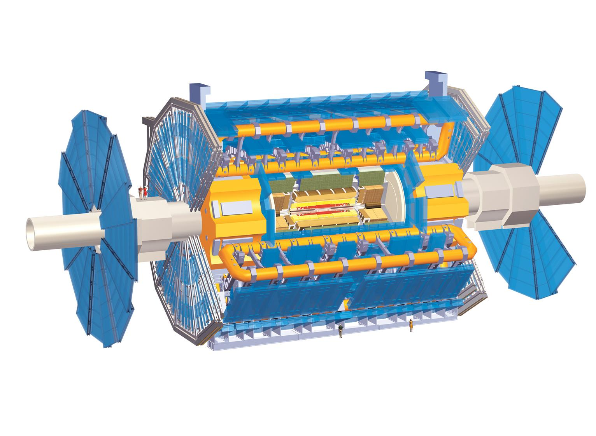

My Presentaions
List of my talks in ATLAS
General Talk
| Date | Group | Title/Link | |
|---|---|---|---|
| 27 Apr, 2018 | Thesis defense | A tale of two Higgs | |
| 2 Aug, 2017 | DPF, Fermilab (Regional Talk) | Search for pair production of Higgs bosons in bbbb with the ATLAS experiment | |
| 11 Nov, 2016 | Higgs Coupling, SLAC (Public Talk) | Search for di-Higgs production with the ATLAS detector | |
| 18 Aug, 2016 | HBSM China, Weihai (Public Talk) | hh to 4b using 2016 summer ATLAS data | |
| 12 Apr, 2016 | Exotic/BSMH Workshop, Grenoble | hh to 4b, bbtautau and bbWW using 2015 ATLAS data | |
| 15 Sep, 2015 | ATLAS Weekly | Muon Spectrometer & DQ Status in 2015 summer |
Muon
| Date | Group | Title/Link | |
|---|---|---|---|
| 22 Jan, 2018 | WWW Analysis | WWW 3l Optimizations | |
| 27 Sep, 2016 | Muon Week Software | Muon Segment Seeding | |
| 9 Dec, 2015 | Muon Week Operation | Muon DQ Summary | |
| 7 Dec, 2015 | Muon Week Software | Muon Road Finding | |
| 23 Sep, 2015 | MCP | Muon DQ Report | |
| 8 Sep, 2015 | MCP | Muon DQ Report | |
| 9 Mar, 2015 | Muon Week | Status of Muon DQM |
hh4b
| Date | Group | Title/Link | |
|---|---|---|---|
| 18 Oct, 2017 | hh4b Analysis | hh4b 2017 Exotics approval | |
| 5 Jul, 2017 | hh4b Analysis | hh4b boosted unblinding approval | |
| 27 Jan, 2017 | hh4b Analysis | hh4b 2017 Status | |
| 29 Jul, 2016 | hh4b Analysis | hh4b 2016 ICHEP ATLAS Approval | |
| 15 Jul, 2016 | hh4b Analysis | hh4b 2016 ICHEP Exotics Approval | |
| 8 Apr, 2016 | hh4b Analysis | hh4b 2bs proposal | |
| 2 Sep, 2015 | hh4b Analysis | SM hh Validation | |
| 27 May, 2015 | hh4b Analysis | 13 TeV Signal Sample Study |
